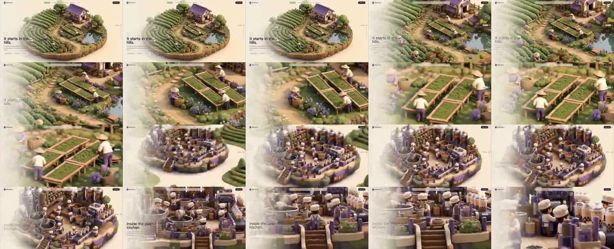

X｜开发者Hailey：Scroll World 用 Agent Skill 生成可滾動 3D 世界落地頁

开发者Hailey（@IndieDevHailey）在 X 分享 Scroll World，定位是「讓任意品牌一鍵生成可滾動的 3D 世界落地頁」的開源 Agent Skill。貼文描述：輸入品牌與場景後，會生成統一風格的 3D 微縮世界，並用連續運鏡串聯；使用者滾動頁面時，鏡頭跟著穿梭，沒有明顯切鏡。
影片畫面
已保存 X 影片縮圖與 contact sheet。畫面可見一個偏柔和黏土 / diorama 質感的 3D 微縮世界：從茶園山丘、紫色屋頂小屋、茶葉晾曬區一路推進到室內廚房/製茶空間。頁面左側有落地頁文案如「It starts in the hills.」與「Inside the pearl kitchen.」；整體像以滾動控制鏡頭，從外部景觀一路飛入內部場景。
這能佐證貼文所說的「連續運鏡」「scroll-scrubbed landing page」概念，但 contact sheet 仍只是抽樣畫面，不能代表所有輸出場景都能無縫或符合品牌規格。
官方 / Primary source 查核
GitHub 主 repo `oso95/scroll-world` 的 description 是：「A skill that turn any brand into a scrollable 3D world」。截至查核時：
- stars：約 6,006；貼文稱 5.6k stars，屬合理但已稍過期的成長快照。
- license：MIT License。
- created_at：2026-07-06。
- README 定位：Claude Code、Codex 與任何 `SKILL.md`-compatible agent 可用的 agent skill。
- 核心效果：builds an immersive, scroll-scrubbed “fly through the world” landing page。
- 支援框架：plain HTML、Next.js、Vue、Python-served page 等，README 稱 framework-agnostic。
- 行動版：可選 mobile version，生成 9:16 portrait chain，而不是單純裁切 landscape。
另有 `cth9191/scroll-world` fork，描述為 Claude Code skill/plugin，強調 Higgsfield、SSIM seam verification、SEO copy block、device-class clip tiering 等改良。本文以 `oso95/scroll-world` 作為主來源，fork 作為延伸觀察。
它其實在做什麼
Scroll World 不是單純「套版 landing page generator」，而是把品牌頁拆成一條可被 agent 執行的 production pipeline：
- Interview：詢問產業、pitch、brand kit、art direction、場景順序、行動版與預算。
- Generate assets：為每個場景生成 still、dive-in camera clip，以及連接相鄰場景的 connector clips。
- Scrub engine：用可攜的 vanilla-JS scrub engine 讓使用者滾動時控制影片時間軸。
- Package：輸出可放進 HTML、Next.js、Vue 或其他頁面的落地頁。
- Optional mobile chain：另做 9:16 直式版本，避免手機只裁切桌面畫面。
對欒帥的可用角度
- 可作為 AI 課程中的「Agent Skill 不只是文字 SOP，也可以封裝完整媒體產線」案例。
- 適合品牌故事頁、作品集、產品 launch、課程視覺導覽頁。
- 可與既有 GSAP / Three.js / AI 影片產線筆記串起來，形成「互動網頁 + 生成式影片 + agent skill」模組。
- 若實際導入，應先做一個低成本 prototype，確認場景數、生成成本、載入速度與手機體驗。
風險與限制
- README 需求包含 Monid CLI / Higgsfield CLI、ffmpeg、Python/Pillow；不是零成本或無依賴工具。
- 生成影片和圖片會有 token / credit / API 成本，需在 skill 執行前做 budget gate。
- 無縫運鏡依賴 connector clips 與相鄰 frames，一旦場景風格漂移或首尾 frame 不一致，體驗會斷裂。
- landing page 若只是一段重影片，SEO、可及性、載入速度、LCP/CLS 與低功耗裝置 fallback 都要額外處理。
- 品牌素材、人物、產品、音樂、生成模型輸出與第三方參考風格仍需授權審查。